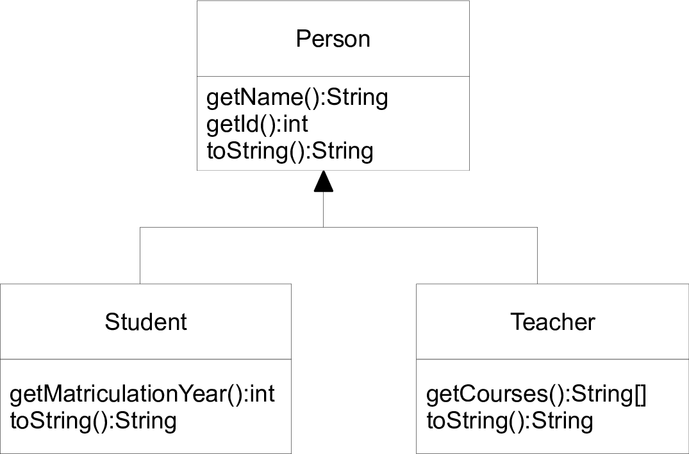
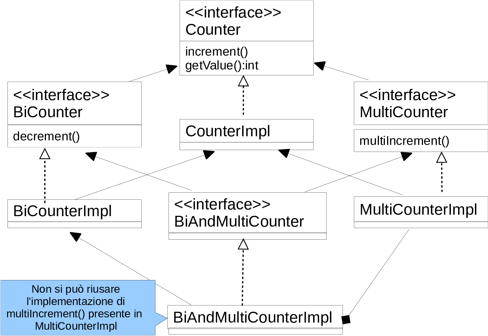

Polimorfismo e tipi a runtime
Progettazione e Sviluppo del Software
C.D.L. Tecnologie dei Sistemi Informatici
Danilo Pianini — danilo.pianini@unibo.it
Gianluca Aguzzi — gianluca.aguzzi@unibo.it
Angelo Filaseta — angelo.filaseta@unibo.it
Compiled on: 2025-11-13 — versione stampabile
Outline
Goal della lezione
- Illustrare la connessione fra polimorfismo inclusivo e ereditarietà
- Mostrare le interconnessioni con interfacce e classi astratte
- Mostrare le varie ripercussioni nel linguaggio
Argomenti
- Polimorfismo inclusivo con le classi
- Layout in memoria degli oggetti
- Il concetto (e il problema) dell’ereditarietà multipla
- Autoboxing dei tipi primitivi
- Tipi a run-time (cast,
instanceof) - Classi astratte
Polimorfismo inclusivo con le classi
Ereditarietà e polimorfismo
Ricordando il principio di sostituibilità
SE B è un sottotipo di A
ALLORA ogni oggetto di B può/“deve poter” essere utilizzabile dove ci si attende un oggetto di A
void m(A a) { /* ... */ }
B b = /* ... */;
A a = b; // OK
m(b); // OK
Con l’ereditarietà
- Con la definizione:
class B extends A { ... }Beredita tutti i membri (campi, metodi) diA, e non può restringerne la visibilità
- Gli oggetti della classe
Brispondono a tutti i messaggi previsti dalla classeA(ed eventualmente a qualcuno in più) - $\to$ un oggetto di
Bpuò essere passato dove se ne aspetta uno diA, senza dare problemi (di “typing”)
Cosa mi hai de
Conseguenza:
Poiché è possibile, corretto, ed utile, allora in Java si considera B come un sottotipo di A a tutti gli effetti!
Polimorfismo con le classi

Polimorfismo con le classi
In una classe D che usi una classe C…
-
ci saranno punti in
Din cui ci si attende oggetti della classeC- come argomenti a metodi, o da depositare nei campi..
-
si potranno effettivamente passare oggetti della classe
C, ma anche delle classiC1,C2,..,C5, o di ogni altra classe successivamente creata che estende, direttamente o indirettamenteC
class C { public void foo() { /*...*/ } }
class D { // rappresenta un generico "contesto"
C c;
public void m(C c) { c.foo(); }
}
class C1 extends C { }
class C2 extends C { }
D d = new D();
d.c = new C1(); // OK
d.m(new C2()); // OK
Le sottoclassi di C
A tutti gli effetti, gli oggetti di C1, C2 … (sottoclassi di C) sono compatibili con gli oggetti della classe C
- supportano lo stesso contratto (in generale, qualche operazione in più)
- hanno lo stesso stato, ovvero gli stessi campi definiti in
C(in generale, qualcuno in più) - hanno auspicabilmente un comportamento compatibile (cf. “Principle of Least Surprise”)
Layout oggetti in memoria
Alcuni aspetti del layout degli oggetti in memoria…
Diamo alcune informazioni generali e astratte. Ogni JVM potrebbe realizzare gli oggetti in modo un po’ diverso. Questi elementi sono tuttavia comuni.
Struttura di un oggetto in memoria
-
Inizia con una intestazione ereditata da
Object(16 byte circa), che include- Indicazione di quale sia la classe dell’oggetto (runtime type information)
- Tabella dei puntatori ai metodi, per supportare il late-binding
- I campi della classe
Object
-
Via via tutti i campi della classe, a partire da quelli delle superclassi
Conseguenze: se la classe C è sottoclasse di A…
Allora un oggetto di C è simile ad un oggetto di A: ha solo informazioni aggiuntive in fondo, e questo semplifica la sostituibilità!
Esempio applicazione polimorfismo fra classi – UML

Person
public class Person {
private final String name;
private final int id;
public Person(final String name, final int id) {
super();
this.name = name;
this.id = id;
}
public String getName() {
return this.name;
}
public int getId() {
return this.id;
}
public String toString() {
return "P [name=" + this.name + ", id=" + this.id + "]";
}
}
Student
public class Student extends Person {
final private int matriculationYear;
public Student(final String name, final int id,
final int matriculationYear) {
super(name, id);
this.matriculationYear = matriculationYear;
}
public int getMatriculationYear() {
return matriculationYear;
}
public String toString() {
return "S [getName()=" + getName() +
", getId()=" + getId() +
", matriculationYear=" + matriculationYear + "]";
}
}
Teacher
import java.util.Arrays;
public class Teacher extends Person {
final private String[] courses;
public Teacher(final String name, final int id,
final String[] courses) {
super(name, id);
this.courses = Arrays.copyOf(courses, courses.length);
}
public String[] getCourses() {
// copia difensiva necessaria a preservare incapsulamento
return Arrays.copyOf(courses, courses.length);
}
public String toString() {
return "T [getName()=" + getName() +
", getId()=" + getId() +
", courses=" + Arrays.toString(courses) + "]";
}
}
UsePerson
public class UsePerson {
public static void main(String[] args) {
final var people = new Person[]{
new Student("Marco Rossi",334612,2013),
new Student("Gino Bianchi",352001,2013),
new Student("Carlo Verdi",354100,2012),
new Teacher("Mirko Viroli",34121,new String[]{
"OOP","PPS","PC"
})
};
for (final var p: people){
System.out.println(p.getName()+": "+p);
}
}
}
La differenza col caso del polimorfismo con le interfacce
Polimorfismo con le interfacce
- La classe
Drealizza una interfacciaI, ma non eredita da un’altra classeC - Si può assumere vi sia un certo contratto, ma non che vi sia uno specifico comportamento
- Ad esempio, una classe che realizza l’interfaccia
Counterpuò assumere vi sia un metodoincrement(); mentre una classe che eredita daLimitCounterpuò assumere cheincrement()sia soggetto a un limite di incrementi unitari
- Ad esempio, una classe che realizza l’interfaccia
- E’ possibile realizzare più interfacce (cioè, supportare più contratti) ma non è possibile (in Java) estendere più classi
Le classi in Java non consentono “ereditarietà multipla” (in C++ si)
- NON è possibile in Java dichiarare:
class C extends D1, D2, ... { ... }- si creerebbero problemi se
D1eD2avessero proprietà comuni (cf. Triangle Problem e Diamond Problem)- ad es., quale sarebbe l’implementazione ereditata?
- diventerebbe complicato gestire la struttura in memoria dell’oggetto (cf. vtable)
- si creerebbero problemi se
- Con le interfacce non ci sono questi problemi, risultato:
- è molto più semplice prendere una classe esistente e renderla compatibile con una interfaccia
I, piuttosto che renderla una specializzazione di una classeC
- è molto più semplice prendere una classe esistente e renderla compatibile con una interfaccia
Riassunto polimorfismo inclusivo
Polimorfismo
- Fornisce sopratipi che raccolgono classi uniformi tra loro
- Usabili da funzionalità/contesti ad alta riusabilità
- Utile per costruire collezioni omogenee di oggetti
Polimorfismo con le interfacce
- Solo relativo ad un contratto
- Facilità nel far aderire al contratto classi esistenti
- Spesso vi è la tendenza a creare un alto numero di interfacce (cf. interface segregation principle)
Polimorfismo con le classi
- Relativo a contratto e comportamento
- In genere ci si aderisce per costruzione dall’inizio
- Vincolato dall’ereditarietà singola
Come simulare ereditarietà multipla?

Come simulare ereditarietà multipla?
Definizioni
interface Counter { ... }
interface MultiCounter extends Counter { ... }
interface BiCounter extends Counter { ... }
interface BiAndMultiCounter extends MultiCounter, BiCounter { ... }
class CounterImpl implements Counter { ... }
class MultiCounterImpl extends CounterImpl implements MultiCounter{ ... }
class BiCounterImpl extends CounterImpl implements BiCounter { ... }
class BiAndMultiCounterImpl extends BiCounterImpl implements BiAndMultiCounter { ... }
Implementazione di BiAndMultiCounterImpl
- si estende da
BiCounterImpl, si delega via composizione ad un oggetto diMultiCounterImpl
Complessivamente
- si ha completa e corretta sostituibilità tramite le interfacce
- si ha ottimo riuso delle implementazioni
- $\Rightarrow$ si esplori la possibilità di usare solo delegazione, non ereditarietà
Tipi a run-time
Everything is an Object
Perché avere una radice comune per tutte le classi?
- Consente di fattorizzare lì il comportamento comune ad ogni oggetto
- Consente la costruzione di funzionalità che lavorano su qualunque oggetto
Esempi di applicazione:
- Container polimorfici, ad esempio via array di tipo
Object[]- permette di costruire un elenco di oggetti di natura anche diversa
new Object[]{ new SimpleLamp(), new Integer(10) }
- Definizione di metodi con numero variabile di argomenti
- argomenti codificati come
Object[]
- argomenti codificati come
Uso di Object[]
import java.util.Arrays;
/* Tutti gli oggetti possono formare un elenco Object[] */
public class AObject {
public static void main(String[] s) {
final Object[] os = new Object[5];
os[0] = new Object();
os[1] = "stringa";
os[2] = Integer.valueOf(10);
os[3] = new int[] { 10, 20, 30 };
os[4] = new java.util.Date();
printAll(os);
System.out.println(Arrays.toString(os));
System.out.println(Arrays.deepToString(os));
}
public static void printAll(final Object[] array) {
for (final Object o : array) {
System.out.println("Oggetto:" + o.toString());
}
}
}
Tipo statico e tipo a run-time
Una dualità introdotta dal subtyping (polimorfismo inclusivo)
- Tipo statico: il tipo di dato di una variabile dichiarata
- Tipo run-time: il tipo di dato del valore(/oggetto) effettivamente presente (potrebbe essere un sottotipo di quello statico)
- in questo caso le chiamate di metodo sono fatte per late-binding
Esempio nel codice di printAll(), dentro al for
public static void printAll(final Object[] array) {
for (final Object o : array) {
System.out.println("Oggetto:" + o.toString());
}
}
- Tipo statico di
oèObject - Tipo run-time di
ovaria di volta in volta:Object,String,Integer, …
Ispezione tipo a run-time
- In alcuni casi è necessario ispezionare il tipo a run-time
- Lo si fa con l’operatore
instanceof
instanceof e conversione di tipo
/* Everything is an Object, ma quale?? */
public class AObject2 {
public static void main(String[] s) {
final Object[] os = new Object[5];
os[0] = new Object();
os[1] = Integer.valueOf(10);
os[2] = Integer.valueOf(20);
os[3] = new int[] { 10, 20, 30 };
os[4] = Integer.valueOf(30);
printAllAndSum(os);
}
/* Voglio anche stampare la somma degli Integer presenti */
public static void printAllAndSum(final Object[] array) {
int sum = 0;
for (final Object o : array) {
System.out.println("Oggetto:" + o.toString());
if (o instanceof Integer) { // test a runtime
final Integer i = (Integer) o; // (down)cast
sum = sum + i.intValue();
}
}
System.out.println("Somme degli Integer: " + sum);
}
}
instanceof e conversione di tipo
Ispezione ed uso della sottoclasse effettiva
Data una variabile (o espressione) del tipo statico C può essere necessario capire se sia della sottoclasse D, in tal caso, su tale oggetto si vuole richiamare un metodo specifico della classe D.
Coppia instanceof + conversione
- con l’operatore
instanceofsi verifica se effettivamente sia di tipoD - con la conversione si deposita il riferimento in una espressione con tipo statico
D - a questo punto si può invocare il metodo
C x = new java.util.Random().nextInt() > 0 ? new D() : null;
if(x instanceof D d) { /* codice che usa d */ }
Solo due tipi di conversione fra classi consentite
- Upcast: da sottoclasse a superclasse / classe antenata (spesso automatica)
- Downcast: da superclasse a sottoclasse / classe discendente (potrebbe fallire)
Errori possibili connessi alle conversioni
Errori semantici (a tempo di compilazione, quindi innocui)
- Tentativo di conversione che non sia né upcast né downcast
- Chiamata ad un metodo non definito dalla classe (statica) del receiver
Errori d’esecuzione (molto pericolosi, evitabili con l’instanceof)
- Downcast verso una classe incompatibile col tipo dinamico, riportato come
ClassCastException
/* Showing ClassCastException */
public class ShowCCE {
public static void main(String[] as) {
Object o = Integer.valueOf(10);
Integer i = (Integer) o; // OK
String s = (String) o; // ClassCastException
// int i = o.intValue(); // No, intValue() non def.
// String s = (String)i; // No, tipi inconvertibili
}
}
instanceof, conversioni e Person
public class UsePerson2 {
public static void main(String[] args) {
final Person[] people = new Person[] {
new Student("Marco Rossi", 334612, 2013),
new Student("Gino Bianchi", 352001, 2013),
new Student("Carlo Verdi", 354100, 2012),
new Teacher("Mirko Viroli", 34121,
new String[] { "PO", "FINF-A", "ISAC" }) };
for (final Person p : people) {
if (p instanceof Student) {
final Student s = (Student) p; // Qui non fallisce
System.out.println(s.getName() + " " +
s.getMatriculationYear());
}
}
}
}
Autoboxing dei tipi primitivi, e argomenti variabili
Autoboxing dei tipi primitivi
Già conosciamo i Wrapper dei tipi primitivi
Integer i = new Integer(10); // Deprecated in Java 17 (for removal)
i = Integer.valueOf(10); // recommended
Double d = new Double(10.5); // Deprecated in Java 17 (for removal)
d = Double.valueOf(10.5); // recommended
..ossia, ogni valore primitivo può essere “impacchettato” (“boxed”) in un oggetto
Autoboxing
- Un meccanismo di Java per supportare l’equivalenza fra tipi primitivi e loro Wrapper
- Due meccanismi:
- Se si trova un primitivo dove ci si attende un oggetto, se ne fa il boxing
- Se si trova un wrapper dove ci si attende un primitivo, si fa il de-boxing
Risultato
- Si simula meglio l’idea “Everything is an Object”
- Anche i tipi primitivi sono usabili ad esempio con
Object[]
Uso dell’autoboxing
/* Showcase dell'autoboxing */
public class Boxing {
public static void main(String[] s) {
final Object[] os = new Object[5];
os[0] = new Object();
os[1] = 5; // equivale a os[1]=new Integer(5);
os[2] = 10; // equivale a os[2]=new Integer(10);
os[3] = true; // equivale a os[3]=new Boolean(true);
os[4] = 20.5; // equivale a os[4]=new Double(20.5);
final Integer[] is = new Integer[] { 10, 20, 30, 40 };
final int i = is[0] + is[1] + is[2] + is[3];
// equivale a: is[0].intValue()+ is[1].intValue()+..
// non funzionerebbe se 'is' avesse tipo Object[]..
System.out.println("Somma: " + i); // 100
}
}
Variable arguments
A volte è utile che i metodi abbiano un numero variabile di argomenti
int i = sum(10, 20, 30, 40, 50, 60, 70);
printAll(10, 20, 3.5, new Object());
- prima di Java 5 si simulava passando un unico array
Variable arguments
- L’ultimo (o unico) argomento di un metodo può essere del tipo “
Type... argname”
void m(int a, float b, Object... argname) { ... }
- Nel body del metodo,
argnameè trattato come unType[] - Chi chiama il metodo, invece che passare un array, passa una lista di argomenti di tipo
Type - Funziona automaticamente con polimorfismo, autoboxing,
instanceof, …
Uso dei variable arguments
public class VarArgs {
// somma un numero variabile di Integer
public static int sum(final Integer... args) {
int sum = 0;
for (int i : args) {
sum = sum + i;
}
return sum;
}
// stampa il contenuto degli argomenti, se meno di 10
public static void printAll(final String start, final Object... args) {
System.out.println(start);
if (args.length < 10) {
for (final Object o : args) {
System.out.println(o);
}
}
}
public static void main(String[] s) {
System.out.println(sum(10, 20, 30, 40, 50, 60, 70, 80));
printAll("inizio", 1, 2, 3.2, true, new int[] { 10 }, new Object());
System.out.format("%d %d\n", 10, 20); // C-like printf
}
}
Preview del prossimo laboratorio
Obiettivi
Familiarizzare con:
- Estensione delle classi e corrispondente polimorfismo
- Classi astratte
- Tipi a run-time e boxing
Polimorfismo e tipi a runtime
Progettazione e Sviluppo del Software
C.D.L. Tecnologie dei Sistemi Informatici
Danilo Pianini — danilo.pianini@unibo.it
Gianluca Aguzzi — gianluca.aguzzi@unibo.it
Angelo Filaseta — angelo.filaseta@unibo.it
Compiled on: 2025-11-13 — versione stampabile